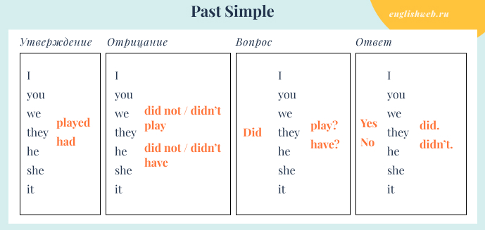

Past Simple
Це граматичний час для опису завершених дій, подій чи станів у минулому, що відбулися у певний момент і вже не мають прямого зв'язку з теперішнім, часто виражається дієсловом у формі минулого часу (робив, читав, ходив), а в англійській утворюється додаванням закінчення -ed до правильних дієслів або використанням другої форми неправильних дієслів (наприклад, played, worked, read, went)
